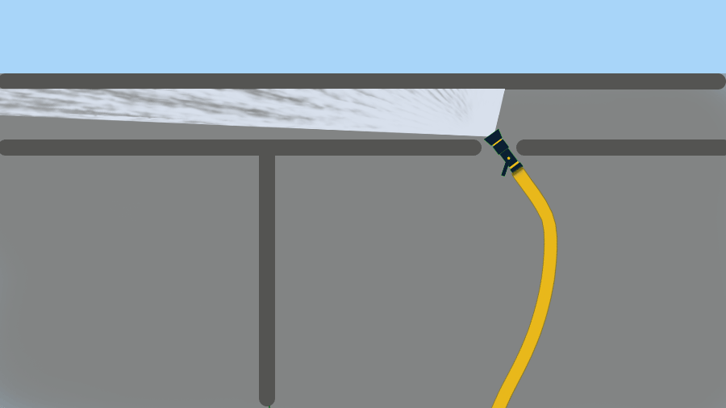

5) Cockloft Fires etc
With input from Joe MaloneyJoe is a former District Fire Chief (FF 32 yrs, 19 as District Chief),
1st draft 9Aug21 Latest rev 20Sep24
Feedback/Qs roomfiresetc@gmail.com
Extinguishing a cockloft fire is about wetting the burning fuel surfaces and ventilating skillfully. Don't stray from that mental model.
Gut reaction for many FFs is to “get ahead” of the fire and put water on its farthest reach. But control is not about working the leading edge.

Long flames across the underside of a roof deck can extend over a big area that is not pyrolyzingHeat-driven processes that produce fuel gases from solid and liquid fuels yet. Applying water in that area can push the flame around, but it won't be an easy or effective way to kill the fire.
Control is about wetting the fuel surfaces Steam inerting and gas cooling can help, but stable progress in cocklofts almost always requires wetting the burning fuel surfaces. See Flame Length etc and Room Fires etc that are already making fuel gases.
Find those surfaces and paint them with water. Start by knowing where the fire came from—how it got into the cockloft. An electrical fire in the top floor ceiling is very different from a fire coming up the walls or chases; and both are very different from an exterior fire coming in through a soffit.
(Don't rely on just a thermal imager to track fire above the ceiling. It takes time for the fire's heat to go through building materials to the ceiling or roof membrane where it's visible to the imager. The delay can throw your decisions off.)

If you do have a ceiling hole out ahead of the flame, you should be throwing water back toward the source of the fire. The gold standard for cockloft attacks is a nozzle held above the joists. The FF (keeping their head and body below the ceiling until the fire is controlled) directs the horizontal stream and sees the effect that it’s having.
Penetrating nozzles are also an option, as are combination nozzles using the sharp angle technique. The key is to wet the surfaces that are actually burning and not just chase flame.
Try to restrict the fire’s air supply by limiting ceiling holes until you’re ready to put water where it's needed. Wind and the building’s cockloft vents may work against you, so be realistic in your expectations.
No easy rule governs roof ventilation. Make your decision based on conditions, available protective measures, and likely benefits. A roof hole can have some combination of four possible objectives:
- draw the fire in a good direction;
- turn a horizontal flame into a vertical flame;
- remove airborne fuel (AF)In this context, airborne fuel includes pyrolosis gases and partially-burned fuels. See Flame Length etc for a more general discussion.;
- improve conditions for the inside crews.
If you're sure that the cockloft is the only space that needs to be vented, consider letting the interior crews keep control of the ceiling—not pushing it down. They might want to limit the fire’s air supply; and they may be able to set up a helpful flow between a ceiling hole and the roof hole.
Check early for two ceilings and/or two roofs.